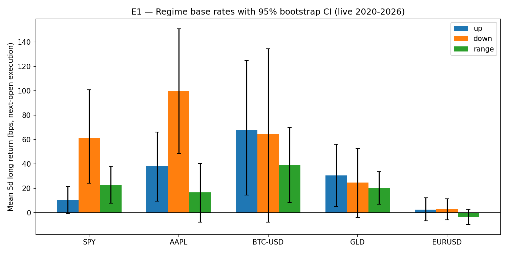
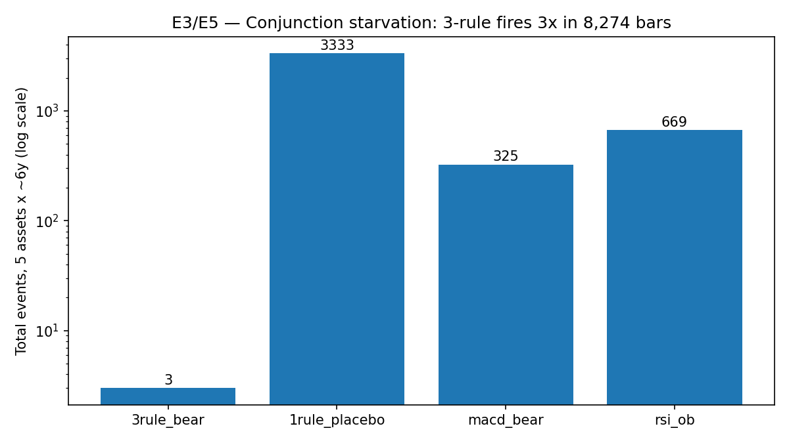
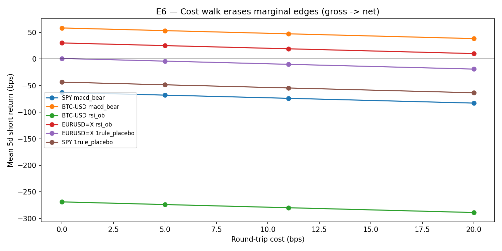

📖 The story in plain words
A beginner learns MACD, then RSI, then Bollinger, then merges them, then changes settings, then buys a new strategy — a year passes, nothing compounds. The course's diagnosis: the tool was never the problem; the question was missing. Indicators don't predict; they describe, like a screwdriver that can't hammer nails.
🤝 Tug-of-war
Every tick is bulls pulling up, bears pulling down. You can't see the teams — only the rope (price). Read the rope, stop chasing hidden "why".
🕯️ One candle = one round
Body = where the rope ended vs started (who won, by how much). Wicks = ground taken then lost (failed attacks). Green = bulls, red = bears.
🔦 Three flashlights
Never open a chart without asking: Q1 who holds the rope? Q2 how strongly? Q3 is control slipping? Up / down / range answers Q1; the rest of this page answers Q2–Q3 with numbers.
🧠 Memory trenches
Old battlefields are remembered: support (floor where bulls regroup) and resistance (ceiling where bears defend) are zones, not knife lines. A line reveals memory; it never decides your trade.
📊 What live data actually says (verified 2026-10-12)
Universe: SPY 1,507 · AAPL 1,507 · BTC-USD 2,192 · GLD 1,507 · EURUSD 1,561 bars (2020-10 → 2026-10). Signal at close t, entry at open t+1, 5-day hold, 0/5/11/20 bps costs, regime-matched random controls, 30 tests with BH correction. Full tables: results/table.csv, results/regimes.csv.
E1 — Trend does NOT dominate 5-day returns (mean-reversion overlay)

| Symbol | Up (bps) | Down (bps) | Range (bps) | Reading |
|---|---|---|---|---|
| SPY | +10.4 | +61.4 | +22.9 | Down-bounces beat up-trends |
| AAPL | +38.0 | +100.1 | +16.6 | Same inversion |
| BTC-USD | +67.9 | +64.5 | +38.8 | All positive, wide CIs |
| GLD | +30.7 | +24.8 | +20.2 | Flat-ish |
| EURUSD | +2.5 | +2.8 | −3.5 | FX ≈ noise at 5d |
E3/E5 — Signals vs matched controls (shorts, gross bps)

| Family | SPY | AAPL | BTC | GLD | EURUSD |
|---|---|---|---|---|---|
| 3-rule reversal | n=1 +19 | n=1 +189 | n=0 — | n=1 +105 | n=0 — |
| 1-rule placebo | −43 | −59 | −53 | −32 | +1.1* |
| MACD-bear | −63 | −95 | +58† | −52 | −12 |
| RSI-overbought | +1 | −13 | −269‡ | −25 | +30† |
* EURUSD 1-rule excess +50.6 vs weak control, p≈6e-80, but gross +1.1 → net −18.9 at 20 bps: statistically real, economically dead. † raw-only, BH-rejected. ‡ BH-surviving negative: shorting overbought BTC shorts strength.
E6 — Costs erase the margin

Only one short averages >+50 bps gross (BTC-MACD +58.5 → +38.5 net at 20 bps) — and it flips sign out-of-sample (+89.8 IS → −18.0 OOS). Everything else is gross-negative before costs.
User stories — who is this repo for?
- 🎓 Self-learner (zero → pro): read story → quiz → lab → run one symbol in 5 minutes.
- 👩🏫 Teacher / community lead: classroom-ready charts + quiz with answers; fork and translate.
- 📊 Strategy skeptic: drop any symbol into the pipeline; matched controls + BH stop fooling yourself.
- 💼 Interviewer / candidate: E1–E7 is a complete "backtest honesty" interview script.
- 🔬 PhD builder: §8 roadmap (calendar-NW, horizon sweep, vol-conditioning, intraday) extends to a thesis.
🎮 Interactive quiz — zero to pro (8 levels, instant feedback)
🕯️ Candle lab — move the sliders, read the round
Rule of thumb from the course: big body + tiny wicks = clean round · long lower wick + small top body = bears attacked, bulls reclaimed · doji + two wicks = drawn round.
⚙️ Reproduce in one command (Docker) or 3 steps (bare metal)
docker compose up --build # → runs 5 symbols × 6y → results/table.csv + regimes.csv # bare metal: pip install -r requirements.txt python3 -m pytest tests/ -q PYTHONPATH=. python3 experiments/run_all.py --symbols SPY,AAPL,BTC-USD,GLD,EURUSD=X --years 6 --out results PYTHONPATH=. python3 experiments/make_charts.py
Features checklist: PIT-correct t→t+1 engine · regime-matched controls · 0/5/11/20 bps cost grid · BH-FDR over 30 tests · bootstrap CIs · 70/30 stability split · deterministic seeds + Parquet cache · pinned deps + Dockerfile · pytest invariants · classroom charts + quiz + lab.
🌐 View as a website — GitHub Pages (2 minutes, 2026 flow)
- Push this folder to GitHub (repo root must contain
preview.htmlanddocs/*.png). - Open the repo → Settings → Pages → Build and deployment → Source: Deploy from a branch.
- Branch:
main, folder/ (root)→ Save. Pages servespreview.htmlathttps://<you>.github.io/<repo>/preview.html. - Optional: Custom domain → add it under Pages → enforce HTTPS. Single-file page = no build step, works instantly.
- Link it from the README header (Live demo badge) so every visitor lands on this interactive page.
Demo video: record 60–90s (terminal run + quiz clickthrough) with any screen recorder, export GIF/teaser ≤10 MB, place at docs/demo.gif and embed  at the README top — GIF-first READMEs convert skimmers (README-builder/LICEcap/Peek/vhs practice).
No demo.mp4 yet? The poster above is the verified E1 chart. Add your recording to docs/demo.mp4 (+GIF fallback) and this player lights up with zero HTML changes.
⚠️ Honest limits + risk
- Daily bars, H=5 only; intraday may differ. 6-year window = one macro regime sample.
- Per-symbol bootstrap (no cross-asset calendar-NW in v1). Yahoo data, costs-only friction (no borrow/funding).
- Detectors are our formalisation of prose — code is public so disputes are parametric.
- Education, not financial advice. Trading loses real money; no guaranteed profit exists.